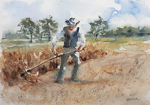

Ajudando a solucionar os problemas da fome mundial e da escassez de
alimentos, promovendo a agricultura sustentável
A
FIAP
se uniu a
Kraft Heinz,
Microsoft
e a
Ong Caça-Fome
para, por meio da tecnologia, promover ações para reduzir a fome global,
a escassez de alimentos e promover a agricultura sustentável.
O projeto "Farm Wise" pretende ser um "companheiro", um assistente que
fornece as respostas para as perguntas dos pequenos produtores, de forma
rápida, simples e objetiva. A API fornecida pela
Open AI
nos permite interagir com IA generativa "Chat GPT". Aplicada ao "Farm
Wise", a IA interpreta o carinhoso papel de "Wise", um sábio agricultor.
Pois, acreditamos que somente um produtor compreende as necessidades e
os anseios de outro.
Não há ninguém melhor que o próprio Wise para explicar a relação
singela, única, estabelecida entre produtores. O texto a seguir foi
escrito pelo Wise, a partir da pergunta:
Por que um agricultor entende outro agricultor?
Ah! E também lhe pedir para escrever com o estilo do poeta
Guimarães Rosa!
O sertão, essa vasta terra abençoada pelo sol inclemente e pelas chuvas
escassas, é morada de homens
valentes e persistentes, cuja labuta diária é moldada pelo arado, pela enxada e pela dureza da
terra. São agricultores, guardiões da terra que lhes sustenta e lhes
chama para o trabalho árduo e recompensador.
Nas entranhas dessa lida, tão
singela e complexa
ao mesmo tempo, há um entendimento silencioso que
transcende palavras
e se faz presente em cada sulco aberto na terra, em cada semente
plantada com esperança. É um entendimento que nasce da dor compartilhada
das colheitas perdidas, das noites de vigília contra pragas e das
incertezas que se escondem no horizonte.
Um agricultor entende outro agricultor porque compartilham dos mesmos
desafios, das mesmas inquietudes e da mesma
paixão pela terra. Eles sabem, em seus corações marcados pelo suor e pelo sol
escaldante, que a vida no campo não é feita apenas de trabalho braçal,
mas também de paciência, resiliência e
fé na natureza.

Eles entendem a linguagem dos ventos, dos pássaros e dos rios,
interpretando os sinais que a natureza lhes oferece como
verdadeiros poetas rurais . Nas conversas ao pé do fogão a lenha, trocam experiências, segredos
ancestrais e sabedorias transmitidas de geração em geração.
Um agricultor entende outro agricultor porque sabem que
o cultivo da terra é um ato de amor
e de conexão com as raízes mais profundas de nossa existência. Eles
compreendem que o solo fértil guarda em si a promessa de fartura e
sustento, mas também o peso das intempéries e das adversidades.
E assim, entre uma lavoura e outra, entre o romper do dia e o anoitecer,
esses homens simples e sábios constroem laços invisíveis que transcendem
as fronteiras das palavras. Um olhar, um gesto, um aperto de mão firme
revelam a
cumplicidade de almas que trilham o mesmo caminho, mesmo que separados por vastas extensões de terra.